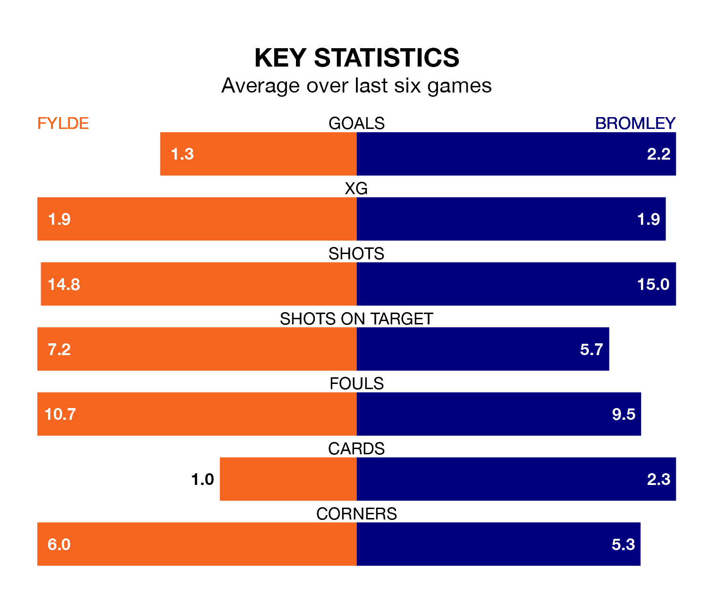

Mid-season relegation candidates Fylde face a challenge against high-flying Bromley at the Mill Farm Stadium on Saturday.
Fylde are 22nd in the National League table, and have picked up six wins and eight draws in their 28 games to date.
The Ravens, meanwhile, are second in the standings with 58 points, having won 16 and drawn 10 of their first 30 matches, and are 13 points behind table-toppers Chesterfield.
With 52 goals in 30 games so far this season, Bromley are the league's third-highest scorers with 1.7 goals per game. And they are conceding fewer than average, letting in 32 goals at a rate of 1.1 per game.
Fylde, meanwhile, are average scorers, with 1.5 goals per game. They have conceded 1.9 goals per game.
In the last 10 years, Fylde and Bromley have played each other on six occasions. They won two each, and they drew twice.
On average, the Coasters scored 1.5 goals and the Ravens 1.5 in those matches.
Their last meeting was on November 18, when Bromley won 1-0 at home.
The Coasters are in mixed form in National League, with two wins and two draws from their last six games.
With two wins and four draws over that period, the Ravens's form is slightly better – they have taken 10 points from 18, compared to the hosts' eight.
Fylde's last match was on Tuesday, a 2-2 draw against Halifax Town, with Luke Bowler Charman and Nicholas George Haughton getting the goals for the Coasters.
Bromley drew 1-1 with Aldershot Town last time out, also on Tuesday, with Callum Reynolds on the scoresheet.
Updated: 09:07 (UTC), 24/01/24